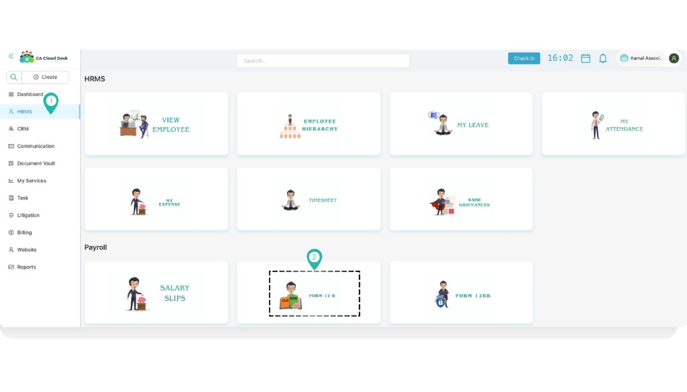
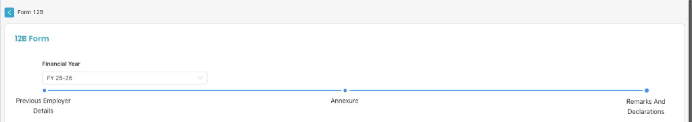
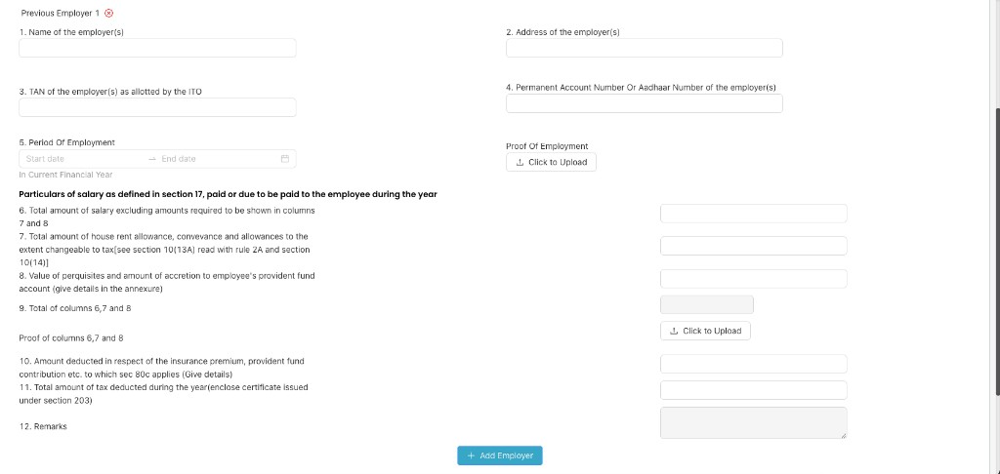
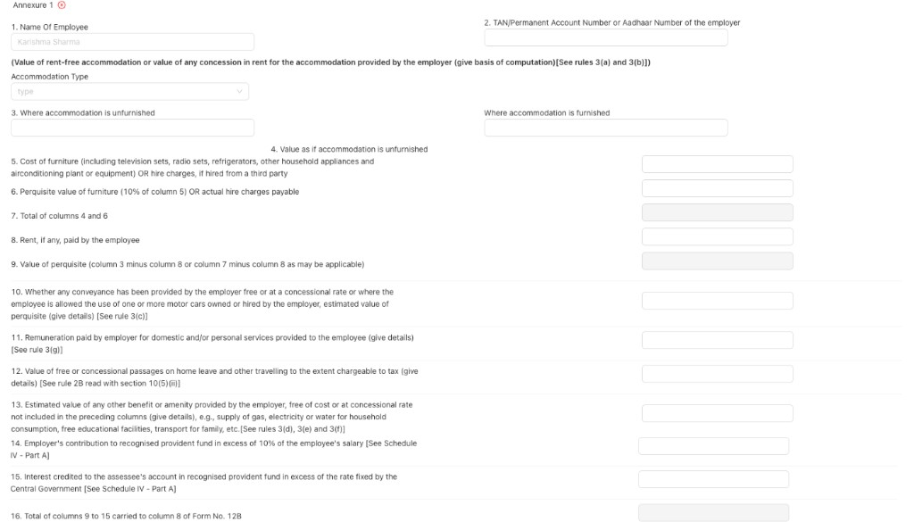
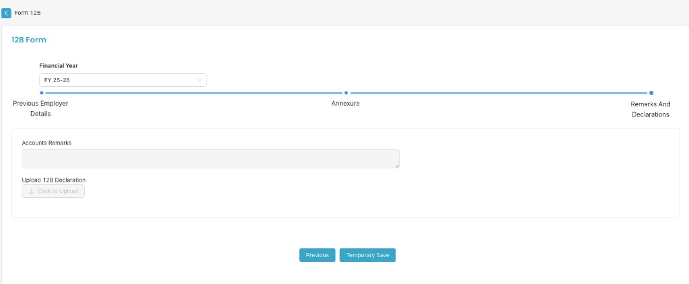

Submit and manage Form 12B for tax declaration when you have joined from a previous employer in the same financial year. Fill details in three parts: Previous Employer Details, Annexure, and Remarks and Declarations.
Path
Dashboard → HRMS → Form 12 B
From the Dashboard, select HRMS in the left navigation. On the HRMS page, under the Payroll section, select the Form 12 B tile to open the form.

Dashboard — select HRMS, then Form 12 B under Payroll.
Form 12B overview
On the Form 12B screen you can choose Branch and Financial Year (e.g. FY 25-26). The form has three sections, shown in the progress stepper:
Previous Employer Details — Enter details of earlier employer(s) and salary/deductions.
Remarks And Declarations — Accounts remarks and upload of 12B declaration.

12B Form — Financial Year and three sections (Previous Employer Details, Annexure, Remarks And Declarations).
1. Previous Employer Details
For each previous employer, fill one block (e.g. Previous Employer 1). You can add more employers using + Add Employer. Use the red X to remove an employer block.

Previous Employer 1 — employer details and salary particulars.
Previous employer identification
1. Name of the employer(s) — Full name of the previous employer.
2. Address of the employer(s) — Complete address.
3. TAN of the employer(s) as allotted by the ITO — Tax Deduction and Collection Account Number.
4. Permanent Account Number Or Aadhaar Number of the employer(s) — PAN or Aadhaar of the employer.
5. Period Of Employment — Start date and End date (In Current Financial Year).
Proof Of Employment — Use Click to Upload to attach proof of employment.
Particulars of salary (as defined in section 17)
Salary paid or due to be paid to the employee during the year:
6. Total amount of salary excluding amounts required to be shown in columns 7 and 8.
7. Total amount of house rent allowance, conveyance and allowances to the extent chargeable to tax [see section 10(13A) read with rule 2A and section 10(14)].
8. Value of perquisites and amount of accretion to employee's provident fund account (give details in the annexure).
9. Total of columns 6, 7 and 8.
Proof of columns 6, 7 and 8 — Use Click to Upload to attach supporting documents.
10. Amount deducted in respect of the insurance premium, provident fund contribution etc. to which sec 80C applies (Give details).
11. Total amount of tax deducted during the year (enclose certificate issued under section 203).
12. Remarks — Any additional remarks for this employer.
After filling one employer, click + Add Employer if you have more than one previous employer in the financial year.
2. Annexure
The Annexure captures perquisite details. You may have Annexure 1 (and more) linked to each previous employer. Employee name may be pre-filled.

Annexure 1 — Employee name, employer TAN/PAN, accommodation type and perquisite details.
Annexure fields
1. Name Of Employee — Pre-filled or enter as applicable.
2. TAN/Permanent Account Number or Aadhaar Number of the employer — Employer identification.
Rent-free accommodation / concession in rent [Rules 3(a) and 3(b)]: Accommodation Type (dropdown), 3. Where accommodation is unfurnished, Where accommodation is furnished, 4. Value as if accommodation is unfurnished.
5. Cost of furniture (including TV, radio, refrigerators, other household appliances and airconditioning plant or equipment) OR hire charges, if hired from a third party.
6. Perquisite value of furniture (10% of column 5) OR actual hire charges payable.
7. Total of columns 4 and 6.
8. Rent, if any, paid by the employee.
9. Value of perquisite (column 3 minus column 8 or column 7 minus column 8 as may be applicable).
10. Conveyance perquisite [Rule 3(c)] — Value if conveyance/motor car provided free or at concessional rate.
11. Remuneration for domestic/personal services [Rule 3(g)].
12. Value of free or concessional passages [Rule 2B read with section 10(5)(ii)].
13. Estimated value of other benefits/amenities [Rules 3(d), 3(e), 3(f)] — e.g. gas, electricity, water, educational facilities, transport for family.
14. Employer's contribution to recognised provident fund in excess of 10% of salary [Schedule IV - Part A].
15. Interest credited to the assessee's account in recognised provident fund in excess of the rate fixed by the Central Government [Schedule IV - Part A].
16. Total of columns 9 to 15 carried to column 8 of Form No. 12B.
3. Remarks and Declarations
In the final step, add any accounts remarks and upload the signed 12B declaration document.

Remarks And Declarations — Accounts Remarks and Upload 12B Declaration.
Remarks and declaration fields
Accounts Remarks — Multi-line text for any remarks from accounts or for internal use.
Upload 12B Declaration — Use Click to Upload to attach the signed Form 12B declaration (as required by your organisation).
Use Previous to go back to the Annexure step, or Temporary Save to save progress without final submission.
Related
HRMS Management — Back to HRMS and Payroll modules. For salary slips and Form 12BB, use the corresponding tiles from the HRMS dashboard.